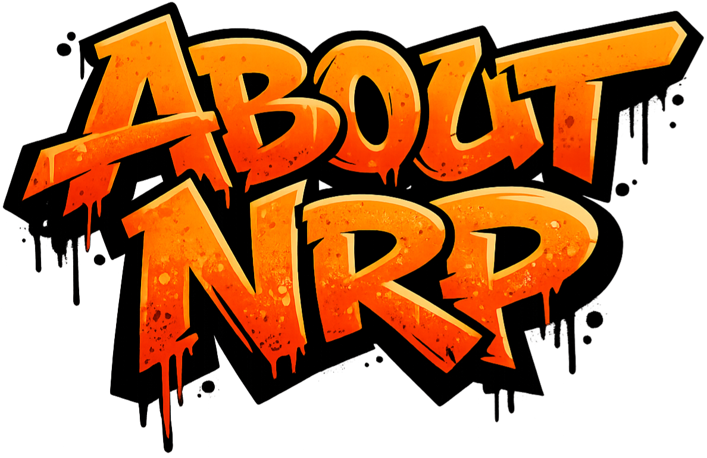

I started out in the early 90s when jungle and happy hardcore were underground in every sense. Back then, it wasn’t about the 'brand'—it was about the music and the mission. I remember walking miles across Sheffield just to get a one-hour slot on Fantasy FM, or designing our own flyers in IT class and sneaking around to put them up all over school. We’d carry every bit of gear we owned on foot just for a chance to play a youth club set.
As the scene turned darker, my obsession shifted from playing tracks to building them. My production style is a direct reflection of those roots: jungle, hardcore, and garage, but stripped of all the unnecessary gloss. I’ve moved away from the 'shine' to focus on what actually works on a floor. I make functional music—heavy, raw, and built specifically for loud systems and dark rooms.
I’m not interested in trends or filler. I make sound system music designed to be felt. Underground by design, exactly how it started.